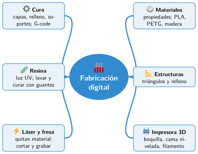

Bloque I · El taller maker
UD03 Fabricación digital
Sesiones
- Sesión 3.1 Materiales y estructuras
- Sesión 3.2 La impresora 3D de filamento
- Sesión 3.3 Preparar la impresión con Cura
- Sesión 3.4 La impresora de resina
- Sesión 3.5 Corte láser y fresado
Al terminar la unidad
- 🛠️ Práctica con las herramientas
- 📝 Repaso de la unidad
- ✅ Autoevaluación
- 🎯 Situaciones de aprendizaje del bloque
Mapa mental de la unidad

✏️ Repasa la unidad con el mapa: tapa una rama y explica en voz alta lo que pone.